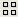
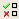

Session Window in Calibre RVE for DRC
The main session window is shown in the following figure. A brief description of the window areas is given in Table 1.
Session Area |
Description |
|---|---|
Toolbars |
Buttons for commonly used menu items. See: |
Report Tabs |
Results from different databases and text files are displayed in separate report tabs. Note: The opening view does not have a report tab; separate tabs appear as soon as a second file is opened. |
Summary Area |
|
Tree View |
A hierarchical view of the results, displayed in tree format. Select the group order for the tree from the View > Tree Options > Group By menu. See DRC Results Tab. |
Result View |
A detailed view of the results within the cluster selected in the tree view. The Result View can be shown in  List (default),  Icons, or Details format using selections in the View > Result Options menu. A Result Data Pane is available for viewing details about selected results. Use the selection View > Results Options > Result Data Pane to turn the display on and off. Also see DRC Results Tab. |
Check Text Pane |
Displays the check text for the rule check selected in the Tree View. Turn this area on and off with View > Check Text Pane. |
Message Area |
Displays information about the selected result or cluster. |
Terminal Window (not shown in default view) |
Provides a Tcl shell. Open with View > Terminal. |